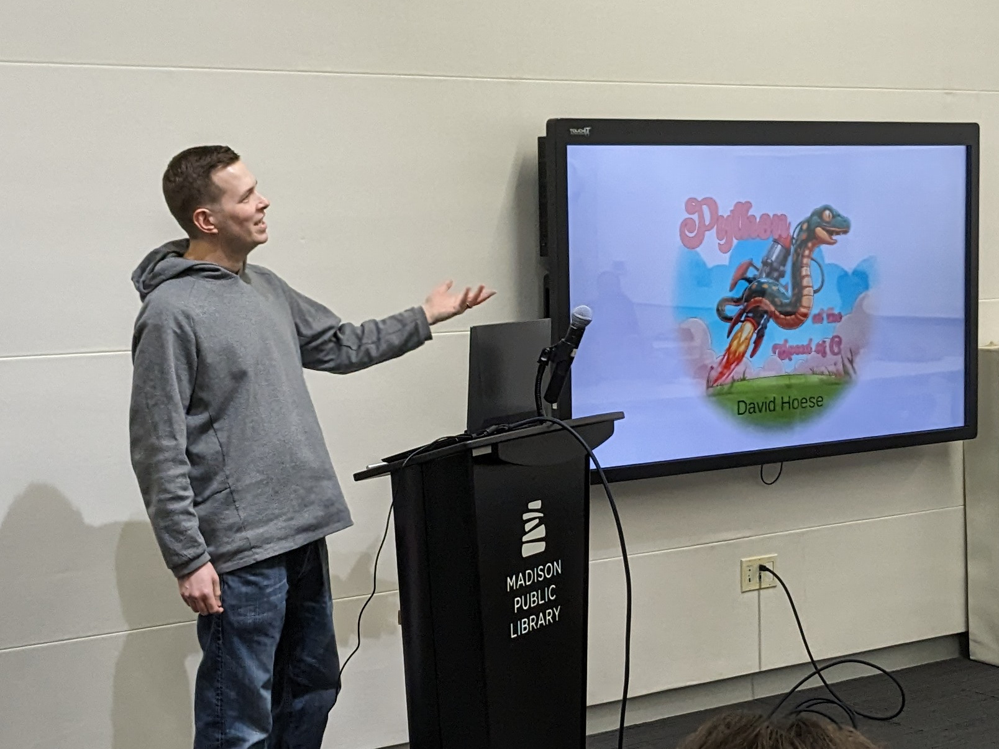
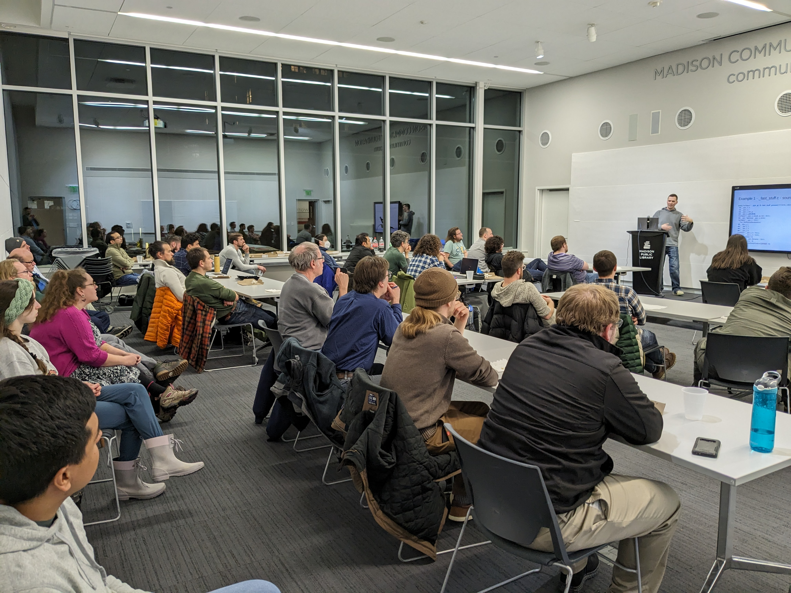

 
Slides from David's talk:
Python's flexibility and ease of use are excellent, but sometimes speed is essential. This month, join us as David Hoese presents "Python at the Speed of C," discussing how to supercharge your Python code using Cython and the C Python API. We'll explore why Python is slow, provide an overview of the Python C API, and discuss why it's challenging to work with. Our speaker will showcase Cython's capabilities through various examples. Whether you're a newcomer or a seasoned Pythonista, this talk offers something for everyone, including a potential bonus on Python Rust extensions. Boost your Python skills with us!
David Hoese is a software developer at the Space Science and Engineering Center at the University of Wisconsin-Madison. He graduated with a Bachelor's degree in Computer Engineering from UW-Madison. Dave works on writing software tools to assist atmospheric scientists with a focus on analyzing satellite and ground-based instrument data.